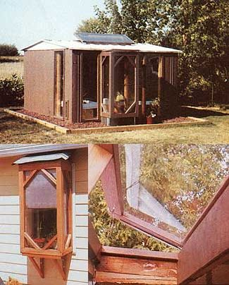

To make an attractive, efficient solar greenhouse for producing food year-round, simply . . .
My wife, Terri, and I-enthusiastic gardeners both-had long dreamed of building a solar greenhouse that would enable us to garden right through Illinois's long winter months. Unfortunately, our limited budget kept that dream just a dream . . . until we stumbled on a low-cost way to overcome our budget crunch and grow fresh vegetables, herbs, and flowers year-round: We converted one of those ubiquitous prefabricated metal storage sheds into a compact but highly productive solar greenhouse.
The seed of inspiration that would eventually grow to become our greenhouse took root the day I constructed a window-box planter from 2 X 2 redwood strips and 1/4"-thick polycarbonate sheeting. Mounted on the outside of a south-facing, double-hung window, this minigreenhouse added heat to the interior of our home on sunny winter days, while the plants growing in the box were in turn warmed by the house at night.
It was a grand arrangement. But we eventually moved to a house in which none of the windows were the right size to accept the box. Consequently, the window planter became a decoration (Terri had a different word for it) in our new backyard. Then one day a friend gave us a 10' X 9' metal storage shed-spanking new, unassembled, and still in its crate. As we were trying to decide where in the backyard to erect the shed, I noticed the old window box lying fallow nearby, put one and one together, and conceived the idea of converting the storage shed into a solar greenhouse.
As soon as we had a set of plans committed to paper, we began construction by excavating a 2'-deep foundation trench a little larger than the exterior dimensions of the storage shed. After pounding four preservative-treated 4 X 4 posts into the ground-one at each corner of the trench-we connected their leveled tops with treated 2 X 6 planks to form a foundation for the shed's metal base and then added a special ledge to support the window box, which would project from the south-facing wall. (We went with 2 X 6 rather than 2 X 4 foundation sills to provide enough wood, after the shed's base was bolted in place, on which to rest the interior walls.)
We enclosed the foundation's sides by gluing rigid sheets of 2"-thick expanded styrene insulation vertically to the outsides of the foundation frame. And to help keep out insects and rodents, we covered the insulation panels with aluminum screening. That accomplished, we bolted the base of the unassembled shed to the frame, then filled in the excavation around the foundation.
Terri and I assembled the metal shed according to the manufacturer's instructions . . . except that we didn't install the south or all of the west wall panels, or the sliding doors. And since the finished greenhouse would be charged with the task of holding its interior heat against the tug of winter's cold, we took the precaution of laying a heavy bead of caulking compound along each of the seams before screwing and bolting the pieces together.
The next step was to frame in the interior walls-both for added strength and to provide double walls between which we could sandwich insulation. We used treated 2 X 4 studs to prefabricate frames for the south and west walls (which were to be covered with solar glazing), but opted to save a few bucks by framing in the metal-paneled walls with economy studs. (We located the upright studs to correspond with the vertical seams in the metal paneling, then glued wood to metal from the inside and drove aluminum nails through the metal and into the studs from the outside.)
Since the metal roof support framing included in the shed kit appeared to be less than substantial (a crushed roof is the most com mon way a metal storage shed meets its end in snow country), we bolted a 2 X 4 to the bottom side of the center ceiling beam to increase the roof's rigidity and load-bearing capacity. Finally, we completed the stud work by framing in a 2' X 4' area of the roof to accept a homemade skylight.
We decided to glaze the south and west walls with 1/4"-thick acrylic sheeting, because acrylic admits about the same amount of sunlight as does glass, but its thermal (heatretention) characteristics are far superior. Unfortunately, acrylic glazing shatters almost as easily as glass, so we had to handle it with care. (Since we completed our greenhouse, a new doublewalled polycarbonate glazing has come on the market that's not only tougher and easier to work with than acrylic, but also less expensive.)
When we measured the acrylic panels before cutting them to size, we figured in a half-inch gap between the edges of adjoining sheets to allow for heat expansion. To attach the acrylic to the 2 X 4 studs, we first drilled slightly oversized holes through the panels, then attached them to the studs with wood screws fitted with rubber washers. As a final touch-and to provide a more weathertight seal-we caulked the edges of each sheet of glazing, then covered the caulked joints with cedar trim.
To prevent the buildup of condensation in the insulated walls and ceiling, Terri and I drilled holes through the metal siding to accept several small vent plugs. Additionally, we bored holes through the 2 X 4 studs to allow air to circulate between wall panels after the insulation and interior walls were installed.
To provide controllable, flow-through air circulation to the interior of the greenhouse, we cut openings in the metal portions of the south and west (prevailing wind) walls to accept screened aluminum soffit vents. (On extremely cold nights, we block the vents from the inside with homemade plugs.)
For insulation, we packed fiberglass batting between the studs in the metal walls, as well as between the roof purlins. (We used screen wire to hold the batting in place on the underside of the roof until the dropped ceiling was installed.)
With the insulation in place, we next cut sheets of rigid, foil-faced, 5/8"-thick polyisocyanurate (Celotex brand Thermax insulation board) so that the edges of each two panels would meet in the center of a framing stud-then glued and nailed them in place to form the inner walls and ceiling. We sealed this part of the deal, by caulking the corner joints and duct-taping the seams between polyisocyanurate panels.
For window and door frame trim, we used 1 X 3 white pine furring strips. We fabricat ed double doors by constructing frames of 2 X 2 pine, faced with 1/4"-thick plywood inside and out. For insulation, we packed the space between the interior and exterior plywood sheets with fiberglass batting, and then lined the interior faces of the doors with rigid polyisocyanurate.
The next project was to construct a skylight of double-walled polycarbonate sheeting (a tough, transparent thermoplastic) drilled and screwed to a frame of treated 2 X 4s. We caulked the exterior of the frame at all joints and gave it two coats of wood preservative-then trimmed the interior of the frame with cedar strips. (The skylight is hinged along one edge so that it can be opened to ventilate the greenhouse on warm days; a removable screen keeps birds and bugs from entering when the vent is open. During the coldest months of winter, we close the skylight and insulate it with fiberglass batting.)
For the floor, we began by laying down polyethylene sheeting to act as a vapor barrier, then covered it with two 2"-thick layers of rigid, expanded styrene insulation. To provide a hard walking surface, we used white marble stone. (We chose this seemingly extravagant type of stone because of its excellent solar reflector characteristics.)
The glazed walls needed curtains that could be raised on warm, sunny days and lowered on cold nights-so we cut them from clear polyethylene sheeting and hung them from rods made of scrap sections of PVC plumbing pipe.
The final interior touch was to fabricate plant-growing tables. We used scrap pieces of 2 X 4 painted white (to reflect light) to the frames, then covered them with hardware cloth . . . a material that's strong enough to hold the weight of the plants, yet allows light through to strike the heat-storing jugs below.
A good greenhouse is more than a weathertight building with enough glazing to let in plenty of sunlight . . . the structure must also have sufficient heat storage capabilities to help keep plants warm through winter's long nights.
Any number of materials and methods are suitable for trapping and holding the suit's heat during the day, then allowing it to escape slowly into the interior of the greenhouse at night-but we chose to collect 175 one-gallon plastic milk jugs and fill each with a mixture consisting of half a pint of automotive antifreeze, a quarter cup of chlorine bleach, and water. It's a simple arrangement, and it works.
To protect the top of the projecting window box (which, like the skylight, is hinged for opening on hot days) from being repeatedly soaked by roof runoff, and to collect rainwater for our plants, we rigged a drainage sys tem using 2"-diameter PVC pipe-cut in half lengthwise-as guttering.
We knew we'd need electricity to light and (occasionally) heat the greenhouse, so we hooked into a spare circuit on the house power panel (and included a ground fault interrupter for safety's sake). We wired the lights through a dimmer switch and provided a duplex outlet for a 1,000-watt space heater.
After giving all the exposed wood and metal a coat of exterior paint, we'd finished our little greenhouse. But we were so involved in the project that we decided to go ahead and build a rectangular frame of treated lumber surrounding the greenhouse, line its bottom with a polyethylene vapor barrier, then fill it in with volcanic rock. And while we were at it, we poured a concrete stoop for the entrance.
We grow jade plants, patio tomatoes, lettuce, aloe, scallions, cacti, geraniums, cineraria (a perennial herb), stock (an herb of the mustard family having sweet-smelling flowers), and several other herbs, flowers, and vegetables in our economy greenhouse.
Of course, each plant has a temperature range in which it will grow best-but by doing a little botanical research and using an inexpensive thermometer and hygrometer, we've had tremendous success. On nights when the outside temperature has dropped to 30°F, the interior of the greenhouse-without auxiliary heat-has never dropped below 55°F. Only on really cold nights do we turn on the space heater. That's all it takes to keep the interior at or above 40°F . . . even when the mercury hits 24° below!
Our greenhouse cost around $500 to construct. That estimate doesn't take into account the storage shed-which was given to us-or the window box, since that was an earlier, separate project (an acrylic window could have been used in its place). We also shopped for bargains and did a lot of scrounging to keep costs down. What it might cost you to undertake a conversion such as the one I just described will depend, to begin with, on whether you already own a metal storage shed or must buy one . . . and if the latter, what size you opt to go with (we've seen 10' X 9' shed kits on sale for as low as $170).
If you're not a scrounger, all of the necessary materials (including the various "polys") are available from any good hardware store. And though it does take some time (both Terri and I work full-time jobs and so had to build our greenhouse in a summer's worth of spare weekends and evenings), there's nothing overwhelmingly complicated about a shed-to-greenhouse conversion.
You know, you can undertake a lot of sparetime building projects that will generate immense personal satisfaction. But how many others will provide you with a year-round supply of fresh, homegrown vegetables as well?
|
 CLOCKWISE FROM LEFT. The windowbox planter that started it all . . . . This greenhouse produces flowers and vegetables right through the long winter .... In warmer months, the skylight opens to provide ventilation. |
|
|